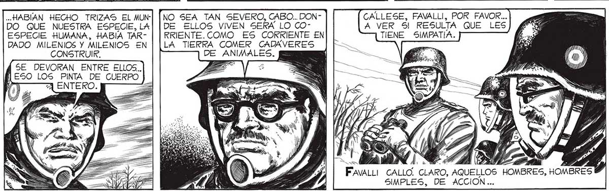
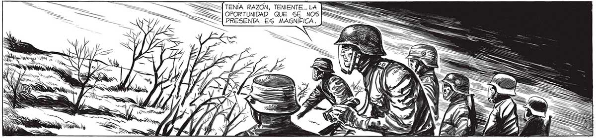

SN Pe ln NA Sd S S S A M N ES SS EN <A NS == O Sy NA > E h Da OS IN SS y a 1 bo) A MS 2 UNA ANDANADA BIEN UBICADA [3% dy NO QUEDA NINGUNO DE [$ "—E505 CASCARUDOS.E== Á NINGUNO LE SORPRENDIO TANTO ODIO. PORQUE NO RECUERDO SENSACION DE REPULSION MAS INTENSA: CREO QUE CADA CÉLULA DE NUESTROS CUERPOS ODIABA HASTA LA DEMENCIA A AQUELLOS INVASORES QUE, VENIDOS QUIEN SABA DE DONDE... 7! Ó ie .. HABIAN HECHO TRIZAS EL MUNDO QUE NUESTRA ESPECIE, LA ESPECIE HUMANA, HABÍA TÁRDADO MILENIOS Y MILENIOS EN CONSTRUIR. SE DEVORAN ENTRE ELLOS... a LOS PINTA DE CUERPO WN Y E NO SEA TAN SEVERO, CABO... DONDE ELLOS VIVEN SERA LO CORRIENTE. COMO ES CORRIENTE EN LA TIERRA COMER CADÁVERES DE ANIMALES. SE HABÍAN AGRUPADO CERCA DEL APARATO EMISOR DEL TERRIBLE RAYO. Y ALLÍ” ESTABAN, QUIETOS COMO ESTATUAS. ÉS DECIR, NO TODOS ESTABAN QUIETOS. Dos DE ELLOS SE INCLINABAN SOBRE UNO DE 5US COM PAÑEROS CAIDOS EN LA LUCHA CONTRA LOS TANQUES. LO ESTABAN DEVORANDO. CALLESE, FAVALLI, POR FAVOR... A VER 5 RESULTA QUE LES TIENE SIMPATIA. FAVALLI CALLO CLARO, AQUELLOS HOMBRES, HOMBRES / SIMPLES, DE ACCION.. NO VEO LA HORA DE QUEMARLOS A TIROS A TODOS. Huso PASIÓN EXPLOSIVA EN LAS PALABRAS DE FRANCO. ...NO PODIAN COMPRENDER LA PERSPECTIVA IMPERSONAL CON QUE ÉL MIRABA TODO. ESTABAMOS DEMASIADO SUMERGIDOS EN EL PELIGRO Y EL ODIO PARA PODER KRAZONAR CON LOGICA.

